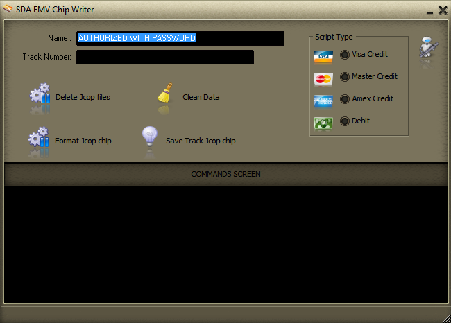
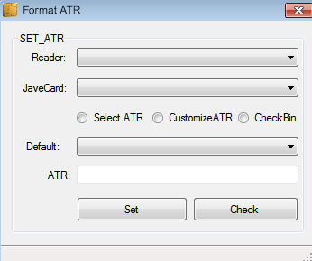
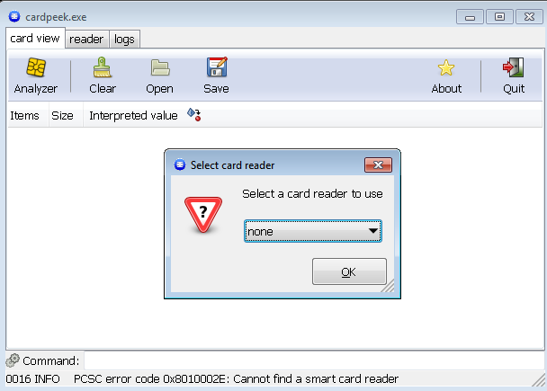

Software
Official Industry Approved EMV Chip Formatting Software



Professional tool for managing Java Card OpenPlatform (JCOP) smart cards. Used to load applets, install EMV applications, manage card content, perform personalization, and handle secure key injection in laboratory and production environments.
Card ManagementUtility focused on reading and interpreting the Answer To Reset (ATR) returned by a smart card. Helps identify the card operating system, supported protocols, historical bytes, and card capabilities — an essential first step in EMV card analysis and diagnostics.
DiagnosticsOpen-source tool designed for exploring the internal structure of smart cards. Allows reading of EMV file systems, application data, certificates and records. Widely used in research, education and laboratory environments for non-destructive card inspection and analysis.
Analysis